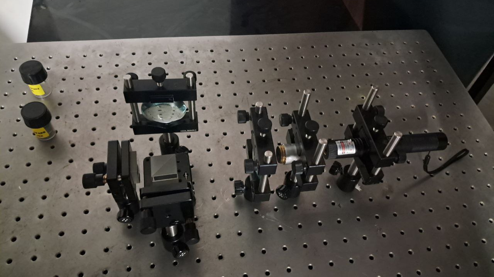
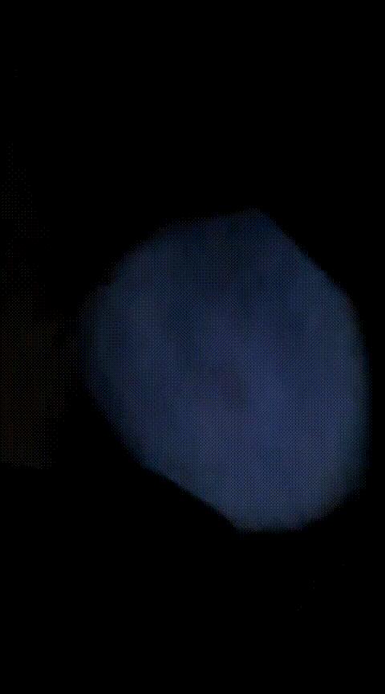
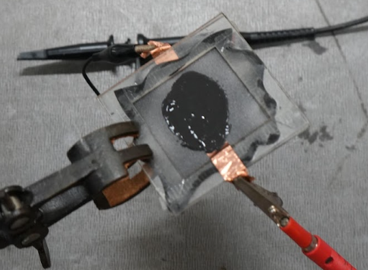

Building Michelson Interferometer
Built a Michelson interferometer to observe interference due to controlled path differences.
OpticsExperimental PhysicsInterferometry

Projects
These are all the projects I've worked on, from concept to completion or failure.
Built a Michelson interferometer to observe interference due to controlled path differences.

Used schlieren imaging to visualize sound waves, heat, smoke, and related density changes in air.

Explored electrically, magnetically, hydraulically, and osmotically responsive soft actuators.

A microcontroller-based motorized star tracker designed to locate and follow celestial objects using equatorial coordinates. The system combines real-time sensor data, time synchronization, and stepper motor control to achieve automated astronomical track
Built a cloud chamber for observing ionizing radiation using Peltier-based cooling.

Used stochastic modeling in Python to study and improve elevator efficiency in large buildings.